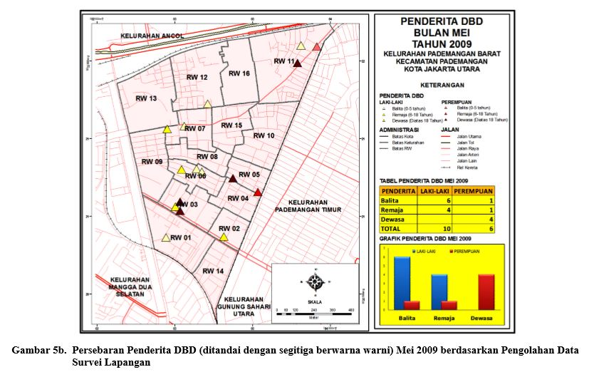

Uray Hety Humaira . Rizky Dwi Novyantika . Davien Alcarlie Yudistira Antoni
PENDAHULUAN
METODE PENELITIAN
HASIL DAN PEMBAHASAN
KESIMPULAN
Penyakit demam berdarah dengue (DBD) merupakan penyakit infeksi yang ditularkan melalui gigitan nyamuk betina Aedes aegypti dan Aedes albopictus yang telah terinfeksi oleh virus dengue dari penderita penyakit DBD sebelumnya.
Selama tahun 1996-2005 tercatat 334.685 kasus DB dengan jumlah penderita yang meninggal 3.092 orang.
Pada tahun 2007, Pemda DKI Jakarta menetapkan ada 16 kelurahan yang menjadi zona merah kejadian luar biasa (KLB) demam berdarah dengue, salah satunya adalah Kelurahan Pademangan Barat.
Angka penderita DBD di Pademangan Barat bergerak menurun sejak tahun 2005. Namun pada tahun 2008, angka penderita bergerak naik kembali. Peningkatan jumlah penderita, persebaran sumber perkembangbiakan jentik, serta angka bebas jentik (ABJ) yang tetap tinggi menjadi latar belakang untuk mengetahui adanya hubungan di antara peningkatan jumlah penderita dengan faktor lingkungan setempat.
Dengan menggunakan pertampalan peta antara kondisi lokasi dengan persebaran penderita, dapat pula diprediksi lokasi yang potensial endemik penyakit menular. Penelitian lainnya pernah dilakukan dengan menggunakan kombinasi antara informasi spatial dan pendekatan statistik untuk memprediksi wilayah kematian penderita yang disebabkan demam berdarah.
Dalam penelitian ini, SIG digunakan untuk mengetahui hubungan antara :
Untuk mendapatkan hubungan di antara variabel, metode yang dilakukan adalah dengan menampalkan peta lokasi potensial sumber jentik dengan jumlah penderita .
Sumber data penelitian ini dibagi menjadi dua bagian, yakni :
Kelurahan Pademangan Barat merupakan salah satu kelurahan padat di Kecamatan Penjaringan, Kota Jakarta Utara. Lokasinya sangat strategis karena berada di kawasan perdagangan Mangga Dua, suatu kawasan komersial yang melayani penjualan barang secara grosir maupun eceran.
Sebagian besar kelurahan ini didominansi oleh permukiman yang padat, bahkan kumuh.
Kelurahan Pademangan Barat adalah kawasan kumuh terpadat nomor dua di Indonesia.
Tidak ada hubungan antara jumlah curah hujan dan hari hujan dengan status ABJ.
Hubungan antara Jumlah Curah Hujan (┅) dengan Jumlah Penderita (━), 2009
Jumlah penderita Deman Berdarah Dengue (DBD) di Kelurahan Pademangan Barat 2009
Penderita juga bisa terdapat di RT dengan ABJ yang aman. Hal ini menunjukkan bahwa penderita mendapatkan gigitan nyamuk di tempat lain, bukan di lingkungan rumahnya.
Hanya ada dua penderita dewasa, yakni satu lelaki dan satu perempuan, yang tempat tinggalnya berjauhan dari lokasi penumpukan barang bekas.
Pada bulan Agustus, penderita yang lokasi tempat tinggalnya berjauhan dengan lokasi penumpukan barang bekas, ada empat orang.
Satu orang penderita remaja perempuan yang tempat tinggalnya jauh dari tempat penumpukan barang bekas, dan satu orang remaja lelaki yang tempat tinggalnya dikelilingi oleh tempat penumpukan barang bekas.
Sebagai kelurahan dengan tingkat kepadatan penduduk yang sangat tinggi dan dengan permukiman yang padat serta kumuh, jumlah penderita DBD di Kelurahan Pademangan Barat pada tahun 2009 dapat dikatakan rendah.
Dari hasil analisis, pengunaan tanah dan ABJ tidak memiliki korelasi positif sebagai penyebab kenaikan jumlah penderita di Pademangan Barat. Namun persebaran lokasi penumpukan barang bekas memberi pengaruh pada adanya penderita di Pademangan Barat.
Walaupun penggunaan SIG sangat membantu untuk memprediksi lokasi yang potensial terhadap penyakit demam berdarah, namun metode ini tidak efektif jika kepedulian masyarakat tidak dibangun sejalan dengan program yang lain dan dilakukan dengan tepat.
{kind=link}
{kind=link}
{kind=link}
{kind=link}
{kind=link}
{kind=link}
{kind=link}
{kind=link}
{kind=link}